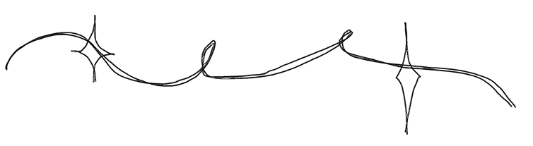

Enterprise Technology Intern
@ State Farm
May 2026 - Aug 2026
- data engineering and aggregation
Effective Coding with AI TA
@ CMU School of Computer Science
January 2026 - present
- ta duties ts
experience

Enterprise Technology Intern
@ State Farm
May 2026 - Aug 2026
Effective Coding with AI TA
@ CMU School of Computer Science
January 2026 - present